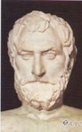
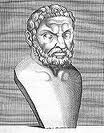
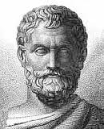
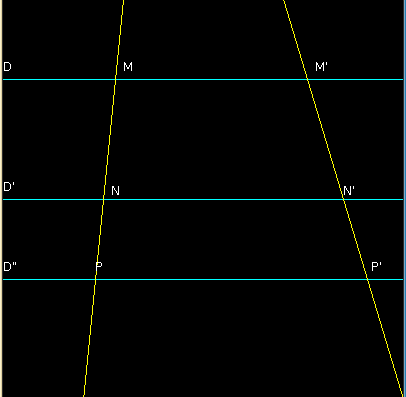
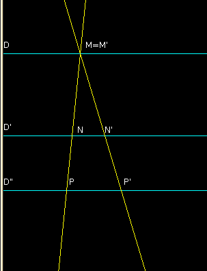
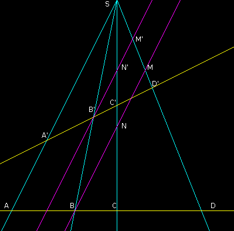

| Choisissez votre langue ! | Choose your language ! |
Théorème de Thalès
Thales' theorem
Hommage à Thalès de Milet
Thalès de Milet appelé communément Thalès (en grec ancien Θαλής / Thalês), était un philosophe et savant grec né à Milet vers 625 av. J.-C. et mort vers l'an 547 av. J.-C. Il fut l'un des Sept sages de la Grèce et le fondateur présumé de l'école milésienne.Voici quelques unes de ses représentations :
Tribute to Thales of Miletus
Thales of Miletus, commonly known as Thales (in ancient Greek Θαλής / Thalês), was a Greek philosopher and scholar born in Miletus around 625 BC. AD and died around the year 547 BC. He was one of the Seven Sages of Greece and the presumed founder of the Milesian school.Here are some of his performances:
|  |  |  |
Le théorème de Thalès
Thales' theorem - aka 'Intercept theorem'
Soit Δ et Δ' deux droites non parallèles aux trois premières.
On désigne par M,N,P les points d'intersection de Δ avec D,D' et D" respectivement.
On désigne par M',N',P' les points d'intersection de Δ' avec D,D' et D" respectivement.
Dans ces conditions nous avons :
\( \displaystyle \frac{\overline{MN}}{\overline{MP}}=\frac{\overline{M'N'}}{\overline{M'P'}} \)
Let Δ and Δ' two straight lines not parallel to the first three.
We denote by M,N,P the points of intersection of Δ with D,D' and D" respectively.
We denote by M',N',P' the points of intersection of Δ' with D,D' and D" respectively.
Under these conditions we have:
\( \displaystyle \frac{\overline{MN}}{\overline{MP}}=\frac{\overline{M'N'}}{\overline{M'P'}} \)

\( \displaystyle \frac{\overline{MN}}{\overline{NP}}=\frac{\overline{M'N'}}{\overline{N'P'}} \)
\( \displaystyle \frac{\overline{MN}}{\overline{NP}}=\frac{\overline{M'N'}}{\overline{N'P'}} \)
\( \displaystyle \frac{\overline{MN}}{\overline{M'N'}}=\frac{\overline{MP}}{\overline{M'P'}} \)
\( \displaystyle \frac{\overline{MN}}{\overline{M'N'}}=\frac{\overline{MP}}{\overline{M'P'}} \)
Le théorème de Thalès possède une forme de réciproque.
Thales' theorem has a form of converse.
\( \displaystyle \frac{\overline{MN}}{\overline{NP}}=\frac{\overline{M'N'}}{\overline{N'P'}} \)
alors D' est parallèle à D et D".\( \displaystyle \frac{\overline{MN}}{\overline{NP}}=\frac{\overline{M'N'}}{\overline{N'P'}} \)
then D' is parallel to D and D".Cas particulier
On peut étudier le cas où Δ et Δ' se coupent sur D, c'est à dire quand M=M'.Special case
We can study the case where Δ and Δ' intersect on D, ie when M=M'.

\( \displaystyle \frac{\overline{MN}}{\overline{MP}}=\frac{\overline{MN'}}{\overline{MP'}}=\frac{\overline{NN'}}{\overline{PP'}} \)
\( \displaystyle \frac{\overline{MN}}{\overline{MP}}=\frac{\overline{MN'}}{\overline{MP'}}=\frac{\overline{NN'}}{\overline{PP'}} \)
La seconde résulte de \( \displaystyle \overrightarrow{NN'}=\overrightarrow{NM}+\overrightarrow{MN'} \) et \( \displaystyle \overrightarrow{PP'}=\overrightarrow{PM}+\overrightarrow{MP'} \)
Conservation du birapport par projection centrale
The second results from \( \displaystyle \overrightarrow{NN'}=\overrightarrow{NM}+\overrightarrow{MN'} \) and \( \displaystyle \overrightarrow{PP'}=\overrightarrow{PM}+\overrightarrow{MP'} \)
Conservation of the cross-ratio by central projection
Dans ces conditions le birapport des 4 points ABCD est égal au birapport des 4 points A'B'C'D'.
Under these conditions, the cross-ratio of the 4 points ABCD is equal to the cross-ratio of the 4 points A'B'C'D'.

On trace la parallèle à (SA) passant par B’,elle coupe (SC) en N’ et (SD) en M’.
On applique le théorème de Thalès dans les triangles SAC et SAD :
\( \displaystyle \frac{\overline{SA}}{\overline{NB}}=\frac{\overline{CA}}{\overline{CB}}=\frac{\overline{SA}}{\overline{MB}}=\frac{\overline{DA}}{\overline{DB}} \)
Le birapport de ABCD vaut donc\( \displaystyle \frac{\overline{SA}}{\overline{NB}}\div \frac{\overline{SA}}{\overline{B}}=\frac{\overline{MB}}{\overline{NB}} \)
On montre de même que le birapport de A'B'C'D' vaut \( \displaystyle \frac{\overline{M'B'}}{\overline{N'B'}} \) .En considérant l’homothétie de centre S qui transforme M en M', N en N’,B en B’
On peut en conclure que
\( \displaystyle \frac{\overline{MB}}{\overline{NB}}=\frac{\overline{M'B'}}{\overline{N'B'}} \)
CQFD.Faisceau harmonique
We draw the parallel to (SA) going through B', it intersects (SC) in N' and (SD) in M'.
We apply the theorem of Thales in the SAC and SAD triangles:
\( \displaystyle \frac{\overline{SA}}{\overline{NB}}=\frac{\overline{CA}}{\overline{CB}}=\frac{\overline{SA}}{\overline{MB }}=\frac{\overline{DA}}{\overline{DB}} \)
The cross-ratio of ABCD is therefore equal to\( \displaystyle \frac{\overline{SA}}{\overline{NB}}\div \frac{\overline{SA}}{\overline{B}}=\frac{\overline{MB}}{\overline{ NB}} \)
We show in the same way that the cross-ratio of A'B'C'D' is equal to \( \displaystyle \frac{\overline{M'B'}}{\overline{N'B'}} \) .Considering the dilation with center S which transforms M into M', N into N', B into B'
It can be concluded that
\( \displaystyle \frac{\overline{MB}}{\overline{NB}}=\frac{\overline{M'B'}}{\overline{N'B'}} \)
QED.Harmonic bundle
|
Création Gilles Dubois - licence CC-BY-SA
Created by Gilles Dubois - licence CC-BY-SA
|
Septembre 2023
September 2023
|
Version mobile Jquery
Mobile Jquery version
|
|